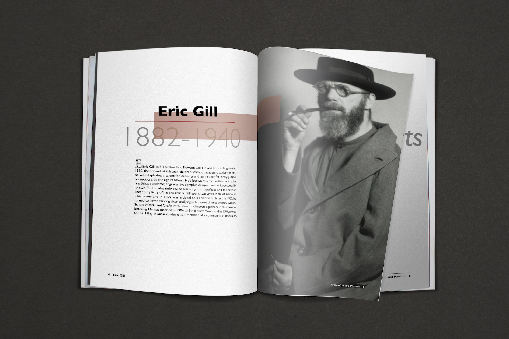
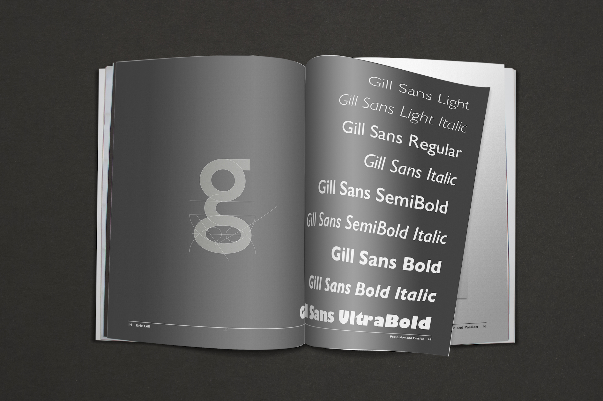

I have found myself falling for the works of controversial men/women, and Eric Gill is one example. He was a sculptor, engraver, typographic designer, and writer. He was also a sexual abuser, a man known to have many faces. Gill was politically active, religiously devoted. He was associated with many movements and associations and presented religious views in many of his works. Ironically, it is his sexual and paraphiliac behavior and erotic art that built up his career and reputation. Additionally, I am intrigued by a question that has been asked frequently but as yet has no correct answer: Should we judge an artist only by his work or not?
Eric Gill designed 11 typefaces in his lifetime and Gill Sans was his most famous. With its classical proportions, high legibility and clean lines, Gill Sans was a huge success right away when it was created in 1928, and became the letter of the British railways - appearing on their signs, engine plates, and timetables. You may also recognize it from the BBC logo.

Gill described himself on his gravestone as a stone carver.
"The shapes of letters do not derive their beauty from any sensual or sentimental reminiscences. No one can say that the O's roundness appeals to us only because it is like that of an apple or of a girl's breast or of the full moon. Letters are things, not pictures of things."
This book will give you a glimpse of Gill’s life and works.